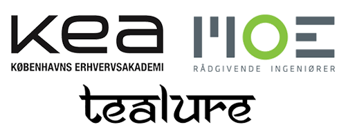

Sharing is Caring!
My name is Lukas, i am glad that you dropped by! I grew in Poland, lived for 7 years in Denmark, now i am working in capital of Sofia, Bulgaria. I look forward for the new challenges in life, take a closer look on my timeline below!
Lineage 2 private game servers
Administrator / Owner / Game Master
I was cooperating with a group of 6 people, who had goal to create an MMORPG server. Based on“L2j” Java files. Our official success rate was 396 online players, which for me personally means success. We have been online for about 3 years.
We were using our forums to communicate with all of players. Our benefits were from private individuals, groups or clan leaders who appreciated our work, creativity and solutions which we could offer for all of players.
2009-2012

Study continuous
School in Rzeszow and school in Copenhagen
In 2010 I have graduated my 4 year IT technician/Support education with main focus on Systems and Networks. Have received Diploma and IT certificate.
After working as warehouse worker for Ilva and ID design, in early 2012 I decided to start Multimedia Design and Communication program at KEA. That’s where I started my life-time journey with Computer Graphics.
2010-2012
A.film studio, Infinity, Xpose Media
First internship, ideas for own company
At that time I have invested in couple of books about programming, design, photography and 3d.
In 2013 after 8 months of hardcore study of 3d I was able to get internship as Junior Graphic Designer in A-film Company. It was an honor for me to see how real artists and 3d professionals work in real 3d studio.
I was working as well on Infinity and Xpose Media, along with incredibly skilled back/front end developer Bartlomiej Fryz
2012-2014
Tealure , MOE A/S, KEA
Internship and jobs
in middle of 2014 i had a pleasure to work as Teachers assistant for KEA, where i was helping students with their tasks and projects.
In early 2015 i had internship with Tealure company.
In the mid of 2015 i had a pleasure to work on Intranet project for MOE A/S. Which is well known company in Denmark.
2014-2015
Future goals and plans
Looking for full-time job opportunities
I am currently looking for a job as Graphic Designer for next 2-3 years. Meanwhile developing my hand-drawing and 3d talents.
After that i plan to get in to the Animation Workshop in Viborg and makes my dreams come true ;)
2016
Telus International
Working as an agent for the Wargaming.net project
In the middle of 2016 i decided to move out from Denmark and move in to the warmer country, which is Bulgaria
I found a job offer as a Customer Support for the gaming industry for the products like World of Tanks.
Still enjoying my ride! Yet in the beginning of 2018 i am back on track!